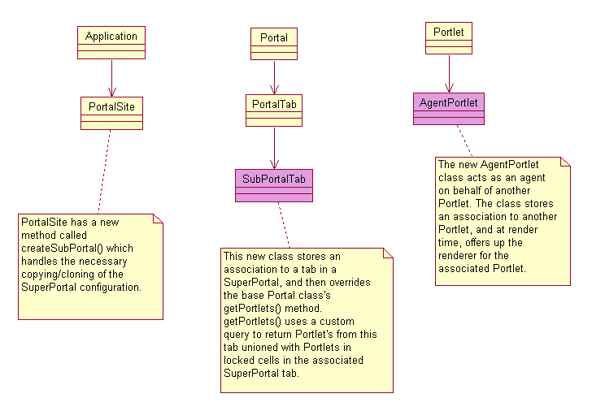

<html>
 <head><title>What has happened to Portal Server?</title></head>
</html>
<body>
<h1>What has happened to PortalServer?</h1>
<p>
 <h2>Introduction</h2>
This recent workcycle for Portal Server has introduced some significant
changes to both the architecture and the user interface of the product. Portal
Server now provides:
<ul>
 <li>A newly revamped sitewide admin interface for creating and managing
portals.</li>
<li>The ability to delete and replace mounted portals.</li>
<li>User Interface for determining the fate of applications mounted beneath 
a portal destined for deletion.</li>
<li>A means for allowing any plain portal to become a Superportal.</li>
<li>Superportals can copy themselves for individual users to customize</li>
<li>Superportals can have individual cell sections within tabs locked so
that Portlets within a locked cell are rendered to the SubPortals</li>
</ul>
This document describes in detail these and other recent changes to Portal Server.
<p>
<h2>Architectural Changes</h2>
There are two Architecturally significant changes to Portal Server in the 
current workcycle. 
<h3>1) Support for Super/Sub Portals</h3>
The roots of Portal Server can be found in the Ars Digita ECM Product. ECM was 
primarily designed as a collaborative application that featured team workspaces.
Each registered user of ECM had a personal portal which they were free to 
personalize, but the layout and styling choices of any other portal on the 
system was fixed for every visitor to that portal. 
<p>The Camden APLAWS contract presents a compelling new portal personalization 
use case. APLAWS portals allow for partial personalization - for example, the 
first column of an APLAWS portal may contain required portlets that every
visitor must have access to, but the other column(s) can be personally
configured by a registered user. What is more, this bahavior can be 
switched on for any portal on the system.
<p>This functionality has been implemented in Portal Server as follows:
<ul>
<li>Any regular portal can be made into a SuperPortal.</li>
<li>A SuperPortal/SubPortal relationship is a special kind of 
Parent Portal/Child Portal relationship.</li>
<li>SubPortals may NOT be made into SuperPortals.</li>
<li>To raise a portal to SuperPortal status, proceed to the local admin
page for the portal, and select the Basic Properties tab. On this tab is a 
link to make the portal a SuperPortal.</li>
<li>After a portal is raised to SuperPortal status, additional configuration
options become available on the Basic Properties tab. Available portlets
for a SubPortal can be restricted here. Also, an option is available to
automatically create personalizable SubPortals for logged in Users visiting
the SuperPortal. The default behavior is to present a "Personalize this Portal"
link to logged in Users who visit the SuperPortal who have not selected to 
personalize the portal on previous visits.</li>
<li>When a User is logged in and has had a personalizable SubPortal created 
for them (the two paths for creation of a SubPortal are described in the 
bullet above) they will be redirected to their own personalizable SubPortal 
beneath the SuperPortal from then on. The only way that they will be able to
visit the SuperPortal will be to do so when they are NOT logged in, if the
SuperPortal allows log-ins from 'Public'.</li>
<li>When a portal is made into a SuperPortal, additional configuration
controls become available within the local admin 'Layout' tab. Individual
columns or cells can be locked so that they are immutable. When a SubPortal
is created, locked cells in the SuperPortal are rendered in the SubPortal,
and are immutable in the SubPortal.</li>
<li>When a SubPortal is created, each tab in the SuperPortal is copied
to the SubPortal, and the locked and unlocked regions are copied for each 
tab.</li> 
</ul>
<p>The implementation of SuperPortals and SubPortals is very simple. Regular 
portals, SubPortals and SuperPortals are all PortalSites. They are 
distinguished only by persisted fields identifying the type of PortalSite.
Using database fields to distinguish PortalSite type has advantages over
class extension, as all 3 types appear in PortalSite collections, but can
easily be filtered if a particular type is desired.
<p>
<h4>A word about locking cells in a Portal</h4>
One of the challenges of this refactor was the fact that cell regions
within a PortalTab have no associated data structure. Column layout for a 
PortalTab is persisted in a VARCHAR field within the PDL for a PortalTab.
Before this work cycle, there were 5 pre-defined layouts. The following
list provides a description of each layout, followed by the string
used to define the layout that is persisted in the database:
<ul>
  <li>One single wide column - 'W'</li>
  <li>A narrow column, then a wide column - 'NW'</li>
  <li>A wide column, followed by a narrow column - 'WN'</li>
  <li>A narrow, then a wide, then another narrow column - 'NWN'</li>
  <li>Three equal width narrow columns - 'NNN'</li>
</ul>
The layout identifier string serves 2 purposes: First, the length of the
string is used by the local admin layout tab's  PortletLayoutComponent class
to determine how many columns of Portlets will be rendered, and whether
or not to draw Portlet 'move position' arrows for Portlets, dependant on which
column they reside. Secondly, the layout string is added as an attribute to
the PortalTab's XML, so the style sheet knows what layout to draw. <br>
Difficulties arose when it was suddenly necessary to designate whether
a cell region in a PortalTab was locked from modification or not.
Removing this simple layout identity mechanism and replacing it with a full java
domain object and associated PDL would have been a very large task, as this
code would touch many files in the admin area as well as in the basic
Portal rendering code.<br>
The solution employed is to lowercase the character in the layout string that
corresponds to a locked cell region. If the layout chosen for a PortalTab
is narrow-wide-narrow, then the layout string would be 'NWN'. If the first
column or cell region is locked, then the persisted layout string would
be: 'nWN'. A 2-column wide-narrow layout, with no locked regions would be 
stored as 'WN'. If both columns in the PortalTab were locked, the layout string
would be 'wn'. This approach to persisting information about locked
cell regions does not interfere with the first purpose of the layout string
described above. To insure styling still looks right, the code that sets
the layout attribute for the PortalTab now calls toUpper() on the layout 
string before setting the layout class attr. 
<p>The only new class types needed to implement Super/SubPortals are the
new SubPortalTab class, and the AgentPortlet class. Below please see the 
figure describing changes to the Portal class structure. New classes
are filled in as pink.<br> 

<br>
<p>
Here is a more detailed description of these two new classes.
<h4>SubPortalTab.java</h4>
SubPortalTab extends PortalTab, which extends the core Portal class. In Portal
is a method called getPortlets(), which returns a PortletCollection. When a 
PortalTab is rendered, getPortlets() is called and the resulting set of 
Portlets is iterated over and each Portlet's renderer is called.<br>
The PDL for SubPortalTab extends PortalTab and adds one column: an association
to the PortalTab in the SuperPortal that this particular SubPortalTab 
corresponds to.<br>
SupPortalTab overrides getPortlets() and returns a PortletCollection that
is a union of Portlets that belong specifically to this SubPortal, along
with Portlets from the associated PortalTab in the SuperPortal that reside
in locked cells. The PortletCollection is built using a custom query called
<code>query-SubPortalPortlets.pdl</code>.
<p>
<h4>AgentPortlet.java</h4>
It is expected that a Portal that has been designated a SuperPortal may have
locked and unlocked cell regions. Unlocked cell regions will contain 
Portlets that may be helpful to a user, but that may be replaced if desired.
If Portlets in unlocked regions have persistant data (and most Portlets do)
then it will be necessary for the Portlet and its data to be copied somehow.
Because there is currently no mechanism for data object copying, Portlets
can not be truly copied without implementing a custom clone method for each.
<br>
For this workcycle, rather than addressing issues that deep copying brings
up, an AgentPortlet has been constructed that acts as an agent for another
Portlet instance on the system. PDL for AgentPortlet contains an association
with a Portlet, and the AgentPortlet's doGetPortletRenderer() first
retrieves the associated Portlet, and then calls the associated 
Portlet's doGetPortletRenderer() and passes the renderer through. The drawback
of this solution is that this type of Portlet cannot be individually 
re-configured. If the user desires a different configuration for a Portlet
represented by an Agent, then they can create a new Portlet and configure
it themselves, and then delete the original AgentPortlet and its Portlet
reference.
<h3>2) Enhanced Site-wide Admin UI</h3>
In the initial release of PortalServer, there was no way to browse the entire
server for PortalSites. In addition, no UI was provided for deleting Portals,
and the only way that a child Portal could be created was within the 
parent Portals local admin page. This work cycle has produced an enhanced
UI for sitewide management, mounted at /portal-admin/.<br>
Screen Captures and legends for the new admin ui follow below.


</body>
</html>
